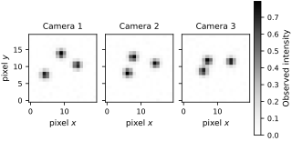
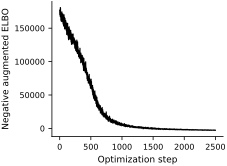
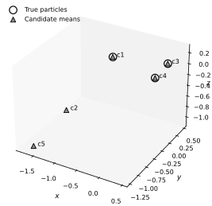
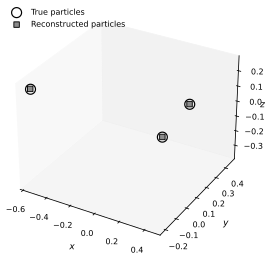
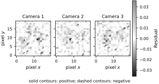

Example - 3D particle position reconstruction from images#
This notebook implements a small synthetic version of the stochastic volumetric reconstruction method of Hans et al. (2023).
The paper proposes a Bayesian reconstruction method for 3D particle locations from synchronized multi-camera images. Its predicted intensity on camera \(m\) is
where:
\(x_n \in \mathbb{R}^3\) are candidate particle positions,
\(h_m\) is the calibration map for camera \(m\),
\(f_m\) is the predicted image intensity on that camera.
As in the paper, we deliberately use more candidate particles than the true number of particles. Variational inference then tries to explain the images while an additional quadratic penalty encourages unnecessary particles to drift away from the imaging region.
Simplifications in this teaching example#
We keep the main structure of the method, but simplify several parts:
We use three synthetic cameras with linear projection maps instead of a full laboratory calibration model.
We use a diagonal Gaussian guide for the candidate particle locations.
We optimize a Monte Carlo estimate of the ELBO with Adam.
After optimization, we cluster nearby candidates to remove duplicates and identify the reconstructed particles.
These simplifications retain the variational reconstruction of a sparse 3D particle field directly from image data.
Synthetic multi-camera dataset#
We place three particles in a cubic domain and render them onto three cameras. Each particle contributes a Gaussian blob on every image plane. We then add a small amount of pixel noise and treat the resulting images as observations.
height = 20
width = 20
num_true_particles = 3
num_candidate_particles = 5
peak_intensity = 0.8
particle_spread = 0.9
noise_std = 0.01
prior_scale = 2.0
penalty_strength = 0.5
repulsion_strength = 0.05
repulsion_length = 0.06
learning_rate = 3e-3
num_steps = 2500
num_mc_samples = 32
camera_matrices = jnp.array(
[
[[1.00, 0.00, 0.00], [0.00, 1.00, 0.00]],
[[0.85, 0.10, 0.55], [0.02, 0.95, 0.22]],
[[0.93, -0.18, 0.34], [0.06, 0.90, 0.48]],
],
dtype=jnp.float64,
)
true_positions = jnp.array(
[
[-0.55, -0.20, 0.25],
[-0.05, 0.45, -0.35],
[0.45, 0.10, 0.20],
],
dtype=jnp.float64,
)
row_coords, col_coords = jnp.meshgrid(
jnp.arange(height), jnp.arange(width), indexing="ij"
)
pixel_grid = jnp.stack([col_coords, row_coords], axis=-1)
def project_points(points, camera_matrix):
projected = points @ camera_matrix.T
scale = jnp.array([width - 1, height - 1], dtype=jnp.float64)
return 0.5 * (projected + 1.0) * scale
def render_camera(points, camera_matrix):
uv = project_points(points, camera_matrix)
displacement = pixel_grid[None, :, :, :] - uv[:, None, None, :]
sqdist = jnp.sum(displacement**2, axis=-1)
blobs = jnp.exp(-0.5 * sqdist / particle_spread**2)
return peak_intensity * jnp.sum(blobs, axis=0)
def render_all_cameras(points):
return jax.vmap(lambda camera_matrix: render_camera(points, camera_matrix))(
camera_matrices
)
clean_images = render_all_cameras(true_positions)
observed_images = clean_images + noise_std * jr.normal(jr.PRNGKey(1), clean_images.shape)
observed_images = jnp.clip(observed_images, 0.0, 1.0)
fig, axes = plt.subplots(
1,
3,
figsize=FIGURE_SIZES["full_landscape"],
sharex=True,
sharey=True,
constrained_layout=True,
)
intensity_limit = float(jnp.max(observed_images))
for idx, ax in enumerate(axes):
image = ax.imshow(
observed_images[idx],
origin="lower",
cmap="Greys",
vmin=0.0,
vmax=intensity_limit,
interpolation="nearest",
)
ax.set_title(f"Camera {idx + 1}")
ax.set_xlabel("pixel $x$")
axes[0].set_ylabel("pixel $y$")
colorbar = fig.colorbar(image, ax=axes, fraction=0.035, pad=0.02)
colorbar.set_label("Observed intensity")
finalize_axes(axes, keep_box=True)
plt.show()
true_positions

Array([[-0.55, -0.2 , 0.25],
[-0.05, 0.45, -0.35],
[ 0.45, 0.1 , 0.2 ]], dtype=float64)
The tensor true_positions contains the particle coordinates used to generate the synthetic data. During inference we pretend these are unknown and instead optimize an approximate posterior over an overcomplete set of five candidate particles.
Variational formulation#
Let \(X = (x_1, \dots, x_N)\) denote the candidate particle locations. We use the generative model
together with a weak Gaussian prior on each coordinate. The guide is a diagonal Gaussian
Following the spirit of the paper, we add a positive quadratic term to the ELBO so that candidate particles that are not needed are encouraged to move away from the domain:
In this synthetic example we also include a very small repulsion term between candidates so that duplicate particles are less attractive numerically.
def unpack_variational_params(phi):
num_coordinates = num_candidate_particles * 3
mu = phi[:num_coordinates].reshape(num_candidate_particles, 3)
log_std = phi[num_coordinates:].reshape(num_candidate_particles, 3)
return mu, log_std
def pairwise_repulsion(points):
differences = points[:, None, :] - points[None, :, :]
sqdist = jnp.sum(differences**2, axis=-1)
mask = 1.0 - jnp.eye(points.shape[0])
return jnp.sum(jnp.exp(-sqdist / repulsion_length) * mask) / (
points.shape[0] * (points.shape[0] - 1)
)
def augmented_elbo(phi, key):
mu, log_std = unpack_variational_params(phi)
std = jnp.exp(log_std)
epsilon = jr.normal(
key, (num_mc_samples, num_candidate_particles, 3), dtype=jnp.float64
)
samples = mu[None, :, :] + std[None, :, :] * epsilon
rendered_images = jax.vmap(render_all_cameras)(samples)
residual = observed_images - rendered_images
log_likelihood = -0.5 * jnp.sum(
(residual / noise_std) ** 2, axis=(1, 2, 3)
)
log_likelihood -= observed_images.size * jnp.log(
jnp.sqrt(2.0 * jnp.pi) * noise_std
)
log_prior = -0.5 * jnp.sum((samples / prior_scale) ** 2, axis=(1, 2))
log_prior -= samples.shape[1] * samples.shape[2] * jnp.log(
jnp.sqrt(2.0 * jnp.pi) * prior_scale
)
log_guide = -0.5 * jnp.sum(
((samples - mu) / std) ** 2 + 2.0 * log_std + jnp.log(2.0 * jnp.pi),
axis=(1, 2),
)
outward_penalty = penalty_strength * jnp.mean(
jnp.sum(samples**2, axis=(1, 2))
) / (3.0 * num_candidate_particles)
repulsion = repulsion_strength * jnp.mean(
jax.vmap(pairwise_repulsion)(samples)
)
return jnp.mean(log_likelihood + log_prior - log_guide) + outward_penalty - repulsion
objective_and_grad = jax.jit(
jax.value_and_grad(lambda phi, key: -augmented_elbo(phi, key))
)
initial_phi = jnp.concatenate(
[
0.2 * jr.normal(jr.PRNGKey(2), (num_candidate_particles, 3)).reshape(-1),
jnp.full((num_candidate_particles * 3,), -1.2, dtype=jnp.float64),
]
)
optimizer = optax.adam(learning_rate)
opt_state = optimizer.init(initial_phi)
phi = initial_phi
losses = []
for step in range(num_steps):
step_key = jr.fold_in(jr.PRNGKey(3), step)
loss, grad = objective_and_grad(phi, step_key)
updates, opt_state = optimizer.update(grad, opt_state, phi)
phi = optax.apply_updates(phi, updates)
losses.append(loss)
losses = jnp.array(losses)
mu, log_std = unpack_variational_params(phi)
std = jnp.exp(log_std)
fig, ax = plt.subplots(
figsize=FIGURE_SIZES["half_standard"], constrained_layout=True
)
ax.plot(losses, color="black", linewidth=1.2)
ax.set_xlabel("Optimization step")
ax.set_ylabel("Negative augmented ELBO")
finalize_axes(keep_box=False)
plt.show()
mu

Array([[-0.55079283, -0.20136855, 0.25287252],
[-1.73623248, -0.0864933 , -1.07268048],
[ 0.4491698 , 0.0991416 , 0.20154243],
[-0.04903057, 0.44876094, -0.34783577],
[-1.58116029, -1.21294498, -1.08378101]], dtype=float64)
The array above contains the posterior means of the five candidate particles. Some should remain near the three true particles, while the unnecessary ones should move away or become diffuse.
fig = plt.figure(
figsize=FIGURE_SIZES["full_standard"], constrained_layout=True
)
ax = fig.add_subplot(111, projection="3d")
ax.scatter(
true_positions[:, 0],
true_positions[:, 1],
true_positions[:, 2],
marker="o",
facecolors="none",
edgecolors="black",
linewidths=1.2,
depthshade=False,
s=90,
label="True particles",
)
ax.scatter(
mu[:, 0],
mu[:, 1],
mu[:, 2],
marker="^",
facecolors="0.55",
edgecolors="black",
s=40,
linewidths=0.9,
depthshade=False,
label="Candidate means",
)
for idx in range(num_candidate_particles):
ax.text(mu[idx, 0], mu[idx, 1], mu[idx, 2], f" c{idx + 1}", fontsize=8)
ax.set_xlabel("$x$")
ax.set_ylabel("$y$")
ax.set_zlabel("$z$", labelpad=-5)
ax.legend(loc="upper left")
finalize_axes(keep_box=False)
plt.show()
candidate_summary = {
f"candidate_{idx + 1}": {
"mean": mu[idx],
"std": std[idx],
"radius": float(jnp.linalg.norm(mu[idx])),
}
for idx in range(num_candidate_particles)
}
candidate_summary

{'candidate_1': {'mean': Array([-0.55079283, -0.20136855, 0.25287252], dtype=float64),
'std': Array([0.01485631, 0.01105781, 0.01536345], dtype=float64),
'radius': 0.6386442990162244},
'candidate_2': {'mean': Array([-1.73623248, -0.0864933 , -1.07268048], dtype=float64),
'std': Array([0.186201 , 0.23532757, 0.2589597 ], dtype=float64),
'radius': 2.042701089496536},
'candidate_3': {'mean': Array([0.4491698 , 0.0991416 , 0.20154243], dtype=float64),
'std': Array([0.01356463, 0.01064145, 0.01488735], dtype=float64),
'radius': 0.5021970885491708},
'candidate_4': {'mean': Array([-0.04903057, 0.44876094, -0.34783577], dtype=float64),
'std': Array([0.01212568, 0.01118273, 0.01444708], dtype=float64),
'radius': 0.5698948122956405},
'candidate_5': {'mean': Array([-1.58116029, -1.21294498, -1.08378101], dtype=float64),
'std': Array([0.14324652, 0.40029399, 0.24268746], dtype=float64),
'radius': 2.2684542484577186}}
Post-processing: identify the reconstructed particles#
The variational posterior is defined over an overcomplete set of candidates, so we still need a simple rule for deciding which candidates represent distinct particles. We use two heuristics:
Ignore candidates that have drifted too far from the imaging volume.
Cluster candidates that are closer than a small distance threshold.
This is not part of the mathematical VI problem itself, but it is a practical way to turn the overcomplete representation into a sparse reconstructed point cloud.
def cluster_active_particles(candidate_positions, candidate_std, radius_threshold=1.6, merge_threshold=0.18):
scores = jnp.linalg.norm(candidate_std, axis=1)
active_particles = []
for idx in map(int, jnp.argsort(scores)):
point = candidate_positions[idx]
if float(jnp.linalg.norm(point)) > radius_threshold:
continue
if any(float(jnp.linalg.norm(point - q)) < merge_threshold for q in active_particles):
continue
active_particles.append(point)
if not active_particles:
return jnp.empty((0, 3), dtype=jnp.float64)
return jnp.stack(active_particles)
def best_rms_error(reconstructed, reference):
if reconstructed.shape[0] < reference.shape[0]:
return jnp.inf, None
best_error = jnp.inf
best_subset = None
reference_indices = tuple(range(reference.shape[0]))
for subset in itertools.combinations(range(reconstructed.shape[0]), reference.shape[0]):
subset_points = reconstructed[jnp.array(subset)]
for perm in itertools.permutations(reference_indices):
candidate = subset_points[jnp.array(perm)]
error = jnp.sqrt(jnp.mean((candidate - reference) ** 2))
if error < best_error:
best_error = error
best_subset = candidate
return best_error, best_subset
reconstructed_particles = cluster_active_particles(mu, std)
rms_error, matched_particles = best_rms_error(reconstructed_particles, true_positions)
fig = plt.figure(
figsize=FIGURE_SIZES["full_standard"], constrained_layout=True
)
ax = fig.add_subplot(111, projection="3d")
ax.scatter(
true_positions[:, 0],
true_positions[:, 1],
true_positions[:, 2],
marker="o",
facecolors="none",
edgecolors="black",
linewidths=1.2,
depthshade=False,
s=100,
label="True particles",
)
if reconstructed_particles.shape[0] > 0:
ax.scatter(
reconstructed_particles[:, 0],
reconstructed_particles[:, 1],
reconstructed_particles[:, 2],
marker="s",
facecolors="0.55",
edgecolors="black",
linewidths=0.9,
depthshade=False,
s=30,
label="Reconstructed particles",
)
ax.set_xlabel("$x$")
ax.set_ylabel("$y$")
ax.set_zlabel("$z$", labelpad=-5)
ax.legend(loc="upper left")
finalize_axes(keep_box=False)
plt.show()
num_detected = int(reconstructed_particles.shape[0])
num_true = int(true_positions.shape[0])
num_matches = min(num_detected, num_true)
ghost_fraction = max(num_detected - num_true, 0) / max(num_detected, 1)
Markdown(
f"""
**Reconstruction summary**
- True particles: `{num_true}`
- Reconstructed particles after clustering: `{num_detected}`
- RMS coordinate error against the best matching assignment: `{float(rms_error):.4f}`
- Ghost fraction after clustering: `{ghost_fraction:.3f}`
"""
)

Reconstruction summary
True particles:
3Reconstructed particles after clustering:
3RMS coordinate error against the best matching assignment:
0.0016Ghost fraction after clustering:
0.000
fig, axes = plt.subplots(
1,
3,
figsize=FIGURE_SIZES["full_landscape"],
sharex=True,
sharey=True,
constrained_layout=True,
)
reconstructed_image = render_all_cameras(reconstructed_particles)
residual_images = observed_images - reconstructed_image
residual_limit = float(jnp.max(jnp.abs(residual_images)))
residual_norm = mpl.colors.TwoSlopeNorm(
vmin=-residual_limit, vcenter=0.0, vmax=residual_limit
)
residual_cmap = mpl.colors.LinearSegmentedColormap.from_list(
"print_residual", ["0.10", "1.00", "0.55"]
)
contour_level = 2.0 * noise_std
for idx, ax in enumerate(axes):
difference = residual_images[idx]
image = ax.imshow(
difference,
origin="lower",
cmap=residual_cmap,
norm=residual_norm,
interpolation="nearest",
)
ax.contour(
difference,
levels=[-contour_level],
colors="black",
linestyles="--",
linewidths=0.7,
origin="lower",
)
ax.contour(
difference,
levels=[contour_level],
colors="black",
linestyles="-",
linewidths=0.7,
origin="lower",
)
ax.set_title(f"Camera {idx + 1}")
ax.set_xlabel("pixel $x$")
axes[0].set_ylabel("pixel $y$")
colorbar = fig.colorbar(image, ax=axes, fraction=0.035, pad=0.02)
colorbar.set_label("Residual")
fig.text(
0.5,
-0.02,
"solid contours: positive; dashed contours: negative",
ha="center",
va="top",
fontsize=8,
)
finalize_axes(axes, keep_box=True)
plt.show()

Reconstruction results#
Stochastic volumetric reconstruction combines a differentiable camera model, a probabilistic model for the unknown particle locations, and a variational approximation of the posterior. The overcomplete candidate set lets optimization suppress unnecessary particles. This small example turns the combinatorial reconstruction problem into continuous optimization over a probabilistic model.